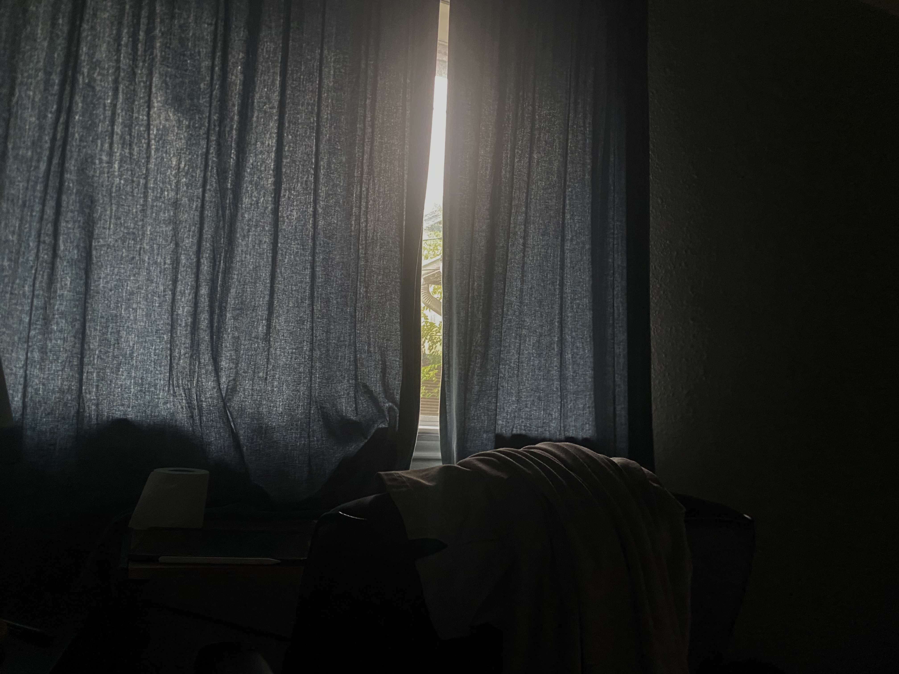

Richard Huang

Urbana, IL, US
$ cat my_info
Hi! 👋
Who I am beyond the résumé. In a hiring process dominated by filters and keyword matching, it's easy to become just another resume. This site is my attempt to make that person visible.
"Don't be the best one, be the only one"
$ cat my_highlights
A little more than a résumé — projects, internships, and the story behind the bullet points.
highlights
| Projects | FPGA, systems, and analog work across coursework and personal builds. |
|---|---|
| Summer 2025 | Intern @ Cadence Design Systems |
| Summer 2026 | Intern @ Coleman Company Inc |
projects
-
Proj
-
Proj
-
Proj
experience
-
20252025 Summer @ Cadence Design SystemsAustin TX · Cadence Virtuoso, python
-
20262026 Summer @ Coleman Company IncSavannah GA · PostgreSQL, JavaScript
why me
At a young age, I was always told that I am a fast learner, that I am the "bright kid". However, I feel less that way nowadays. Not that I am less intelligent compared to the younger self, but intelligence concentrates in the environment around me as I grow. The more I learn, the more I realize how much I do not know. However, I still consider myself a competent engineer that will excel in the future, and here's why I believe so
$ cat why_love
I major in what I love. As simple as that. Among people around me, I find myself one of the few that would say: "I just spent the last 8 hours stepping through RISC-V codes; I hate how I need to sacrifice college life to pass a class, but from deep down my heart, I am amazed by human intelligence and how we can come up with ideas like memory mapping and privilege control.
$ cat why_discipline
I am disciplined person, not just academically. I consider this the number one characteristic of myself that distinguishes me from my peers. Rather than getting a good grade through 10 hours before the exam, or acing an interview through 5 days of LeetCode, to me, success happens when I wake up at 6:30am every morning when 10am is considered early in college; success happens when I cut screen time down to 50min daily; success happens when trying to understand the questions and architecture when AI has overpowered homework.
$ cat why_learning
I want to continue to learn. After 3 years, I realized that undergraduate is more of a starting point than a destination. 3 years learning engineering gives me a comprehensive background knowledge of the engineering world and enlightenment on how little I know about it. RTL design is more than connecting IC chips on a large scale then calling myself an ASIC engineer, it is the beginning of understanding synthesis tools and timing analysis. I want to stay in touch with how the world is evolving.
cv
Download my résumé or reach out — I'd love to hear from you.
contact
Find me on email or social media.